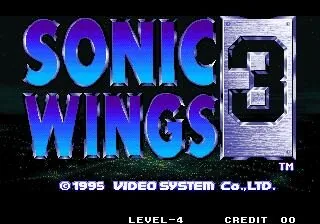

Neo Geo · Nº 3
Aero Fighters 3
- Año: 1995
- Desarrollador: Video System Co.
- Género: Disparos / Vuelo vertical
- Jugadores: 2 jugadores
El tercer juego de esta excelente saga respeta la sólida fórmula de shoot 'em up de sus predecesores. El jugador es un piloto de caza cuya misión es combatir el terrorismo mundial. Hay que volar de país en país destruyendo toda oposición por el mundo, antes de salir al espacio para enfrentarse a la amenaza responsable del terrorismo. Cada piloto tiene su propia historia, ligada a la del juego.
Un solo disparo enemigo destruye el avión del jugador, que suelta la mejora especial que llevara. Si se destruye el último avión, se sueltan todas las mejoras y bombas extra, que se pueden recoger si se elige continuar o si sigue jugando un segundo jugador. Pero en la misión final en el espacio, hay que volver a empezar desde el principio de esa misión, salvo que estén jugando 2 jugadores.
Ahora hay 10 pilotos a elegir: Vought F4U Corsair estadounidense, pilotado por Robo-Keaton. Northrop P-61 Black Widow estadounidense, pilotado por los Blazers. Mitsubishi A6M Zero-Sen japonés, pilotado por Hien. Aichi M6A1 Seiran japonés, pilotado por Mao Mao. Il-2 Stormovik soviético, pilotado por Chaika y Pooshka. Polikarpov I-16 soviético, pilotado por Spanky. Dornier Do-335 Pfeil alemán, pilotado por Malcolm («Pfeil» significa «flecha» en alemán). Junkers Ju-87 Stuka alemán, pilotado por Kowful y River. Westland Whirlwind británico, pilotado por Alex y Pictus. Fairey Swordfish británico, pilotado por Cindy y Ellen.
También hay 2 aviones secretos: El Aka Usagi (Conejo Rojo), pilotado por Kotomi. El Diabloon, pilotado por The Man.
Características de los aviones: Vought F4U Corsair: 3 mejoras y 5 bombas. Northrop P-61 Black Widow: 3 mejoras y 7 bombas. Mitsubishi A6M Zero-Sen: 3 mejoras y 5 bombas. Aichi M6A1 Seiran: 2 mejoras y 5 bombas. Il-2 Stormovik: 2 mejoras y 7 bombas. Polikarpov I-16: 4 mejoras y 6 bombas. Dornier Do-335 Pfeil: 3 mejoras y 4 bombas. Junkers Ju-87 Stuka: 4 mejoras y 7 bombas. Westland Whirlwind: 3 mejoras y 6 bombas. Fairey Swordfish: 1 mejora y 7 bombas. Aka Usagi (Conejo Rojo): 2 mejoras y 4 bombas. Diabloon: 7 mejoras y 2 bombas.
Controles
que B lance la bomba. C y D no se usan.
Matamarcianos: los botones en la fila de abajo.
| Panel | Juego |
|---|---|
 | A · Disparar |
 | B · Lanzar una bomba |
  | Empezar |
 | Meter una moneda |
+  | Salir del juego |
El panel en Neo Geo

Argumento
Recopilado de internet (2026-11-02). Lo marcado con ⚠️ no está probado en la bartop.
Tras su supuesta derrota, las fuerzas alienígenas lanzan un ataque por sorpresa contra la base de los Aero Fighters y destruyen sus aviones.
Sin otra cosa con la que defenderse, los pilotos tienen que volar en viejos aviones de la Segunda Guerra Mundial con modificaciones extrañas y en muy mal estado.
Final: al vencer al último jefe, cada piloto tiene su final. Muy de vez en cuando aparece un jefe oculto en lugar del normal, con su propio final.
Fuentes
Jugabilidad
Recopilado de internet (2026-11-02). Lo marcado con ⚠️ no está probado en la bartop.
- Tipo de juego: matamarcianos vertical de Video System (1995).
- Pilotos: 10 aviones de entrada y 2 secretos de otros juegos de Video System, con un código.
- Ramas: tras algunos jefes aparece un avión con dos alas; el ala que destruyes primero decide la siguiente fase.
- Estructura: 18 fases en total; en cada vuelta se juegan 8 (ver «Guía de niveles»). Las fases 3 y 6 son siempre de bonificación.
- Dos jugadores: hay que elegir aviones de la misma fila. Si los dos aviones se ponen uno encima del otro, sale un disparo combinado muy potente (mientras nadie use bomba).
Fuentes
Guía de niveles
Recopilado de internet (2026-11-02). Lo marcado con ⚠️ no está probado en la bartop.
Recorrido del vídeo (una de las rutas posibles):
| Fase | Lugar y jefe |
|---|---|
| 1 | Tokio · Do-ni Kai |
| 2 | Desierto del norte de África · Vazeel |
| 3 | Bonificación |
| 4 | Londres · Rocket V3 |
| 5 | Canal de Panamá · Montana |
| 6 | Bonificación |
| 7 | Fortaleza · Maxim Gorky |
| 8 | Marte · Soh Takeko |
| 9-16 | Segunda vuelta: Tokio, puerto alemán, Gran Cañón, Francia, ruinas del sudeste asiático y las profundidades de las Bermudas · Pseudo-Bagarius (jefe final) |
- Las fases de bonificación no tienen jefe: o sueltan muchos objetos o están llenas de enemigos que no disparan y dan dinero.
Fuentes
Objetos
Recopilado de internet (2026-11-02). Lo marcado con ⚠️ no está probado en la bartop.
| Objeto | Qué hace |
|---|---|
| P | Sube la potencia. Con la potencia al máximo, da 2.000 puntos. |
| B | Una bomba más. Con las bombas al máximo, da 2.000 puntos. |
| F | Potencia máxima; si ya la tienes, 10.000 puntos. |
| Dinero | Cambia según el país del piloto. Vale de 200 a 10.000 puntos: más cuanto más arriba de la pantalla lo cojas. |
Fuentes
Trucos y secretos
Recopilado de internet (2026-11-02). Lo marcado con ⚠️ no está probado en la bartop.
Secretos
- Dos pilotos secretos de otros juegos de Video System, con un código en la pantalla de selección. ⚠️ Las fuentes no dan la secuencia.
- Jefes ocultos: muy de vez en cuando, los dos últimos jefes cambian por otros, con finales propios.
- Curiosidad: las torretas de la fase de EE. UU. a veces se convierten en un busto de Villiam, del primer Aero Fighters.
Fuentes
Longplay

Partida completa de la recreativa (26 min), de LongplayArchive: Longplay of Aero Fighters 3.
Pulsa el minuto de un nivel para ver el vídeo desde ese punto.